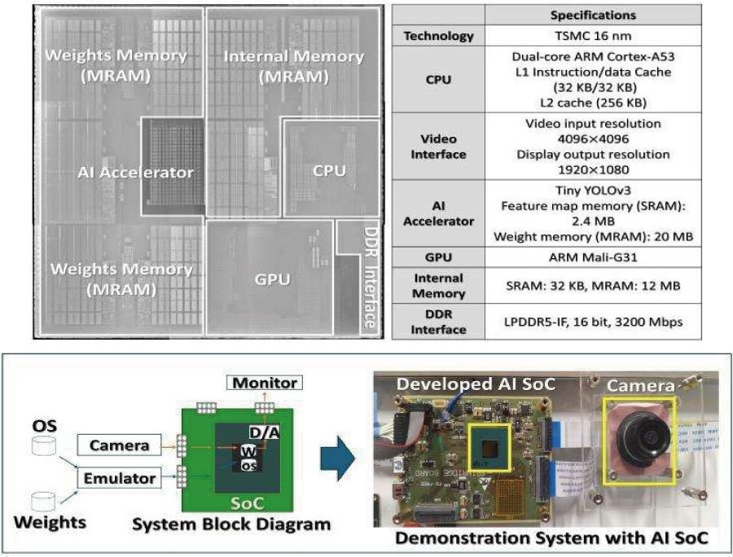

等待常常发生在开始识别之前
一台按需工作的视觉设备收到唤醒信号后，还要准备系统、加载模型，才可能处理图像。AISIN与东北大学把三十二MB的STT-MRAM集成进十六纳米研究芯片，断电后仍保留启动数据和模型权重，减少从外部存储搬运的步骤。输入仍然是图像，输出仍然是物体类别与位置；改动发生在这些步骤开始前和数据读取路径上。它没有新造一种视觉传感器，也没有证明任意模型都能装进去。对产品团队，这提示可以检查等待到底花在计算、加载，还是相机准备，而不是一律增加算力。
AISIN / Tohoku STT-MRAM AI SoC · 芯片研究 · 联合技术公告

一台按需工作的视觉设备收到唤醒信号后，还要准备系统、加载模型，才可能处理图像。AISIN与东北大学把三十二MB的STT-MRAM集成进十六纳米研究芯片，断电后仍保留启动数据和模型权重，减少从外部存储搬运的步骤。输入仍然是图像，输出仍然是物体类别与位置；改动发生在这些步骤开始前和数据读取路径上。它没有新造一种视觉传感器，也没有证明任意模型都能装进去。对产品团队，这提示可以检查等待到底花在计算、加载，还是相机准备，而不是一律增加算力。
联合公告给出的六十五点七毫秒，是从通电到内核启动；文中另外列出Tiny YOLOv3处理用时。两者不能被改写成相机醒来、完成识别并发出可靠动作的总时间。摄像头曝光稳定、输入传输、应用准备以及错误恢复可能另需时间。本研究展示的是减少系统准备成本的技术路径，尚不是已经量产交付的整机。若用于门口设备或间歇巡检，验证应从真实唤醒信号开始，一直量到第一条可用结果，并保持照明、图像质量和判断标准一致，才知道使用者实际少等了多久。
为了适应有限片上空间，作者使用混合精度乘法与权重复用。披露的权重体积从十七点七MB到九点三六MB，检测mAP从〇点三二五降至〇点三一六。这里保留绝对值，因为原文对压缩百分比的表述与数字相除不一致。较小模型有助于减少传输和存储负担，但任务是否允许这点精度损失，取决于漏检与误报的后果。固定摆放物体的示例不能替代不同光线、角度和遮挡的现场图像；更不能把小型检测网络的结果推广到生成式助手或全部机器人感知。
如果设备每天只短暂识别几次，快速启动可能让它更愿意关掉部分系统；若持续处理视频，启动收益可能小得多。这是由架构推导的应用假设，尚不是产品续航实测。可先在已有系统记录待机、唤醒、推理和失败重试各占多少时间与电量，再估算替换内存路径是否值得。还要确认模型更新、容量扩展和制造成本，而不是只挑最大倍数。公告没有给出可购买开发板、商业价格或客户部署成绩，读者应把它看作边缘视觉设计参考，并等待原型之外的系统验证。